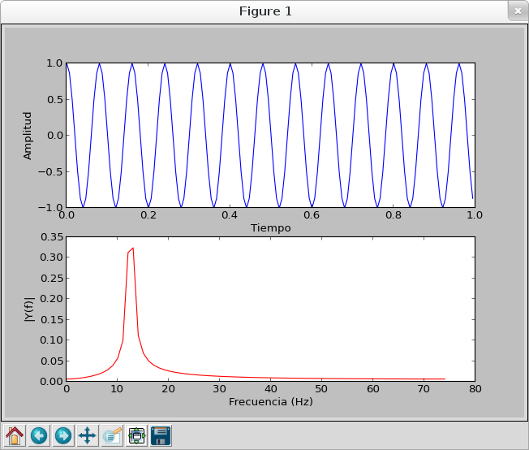

Graficar el espectro de frecuencia con Numpy
Posted on Wed 06 February 2013 in Tutorial Python • 2 min read
En este artículo se explicará como generar una gráfica de una señal que se tiene en el dominio del tiempo a generar la gráfica en el dominio de la frecuencia.
Esté artículo se basa de un artículo en Inglés llamado "How to plot the frequency spectrum with scipy".
El análisis de frecuencia es el proceso de determinar la representación en el dominio de una señal de dominio del tiempo y comunmente empleando la Transformada de Fourier .
La Transformada Discreta de Fourier (DFT) se usa para determinar el contenido de frecuencias de las señales y la Transformada Rápida de Fourier (FFT) es un método eficiente para calcular la Transformada Discreta de Fourier. Scipy implemente FFT y se usará para analizar el espectro de frecuencias.
A continuación se muestra el código que gráfica la amplitud en el dominio de frecuencia de la función coseno del dominio del tiempo:
#!/usr/bin/env python
# -*- coding: utf-8 -*-
#Importa coseno, linspace y pi
from numpy import cos, linspace, pi
#Importa plot, show, title, xlabel, ylabel y subplot para graficar
from pylab import plot, show, title, xlabel, ylabel, subplot
#Importa fft y arange
from scipy import fft, arange
#
def plotSpectrum(y,Fs):
"""
grafica la amplitud del espectro de y(t)
"""
n = len(y) # longitud de la señal
k = arange(n)
T = n/Fs
frq = k/T # 2 lados del rango de frecuancia
frq = frq[range(n/2)] # Un lado del rango de frecuencia
Y = fft(y)/n # fft calcula la normalizacion
Y = Y[range(n/2)]
plot(frq,abs(Y),'r') # grafica el espectro de frecuencia
xlabel('Frecuencia (Hz)')
ylabel('|Y(f)|')
if __name__ == '__main__':
Fs = 150.0; # rata de muestreo
Ts = 1.0/Fs; # intevalo de muestreo
t = arange(0,1,Ts) # vector tiempo
ff = 5; # frecuencia de la señal
y = cos(5*pi*ff*t)
#Proceso de graficar la señal
subplot(2,1,1)
plot(t,y)
xlabel('Tiempo')
ylabel('Amplitud')
subplot(2,1,2)
#Se llama a la funcion con la señal y la rata de muestreo
plotSpectrum(y,Fs)
show()
Al ejecutar el script se genera la siguiente gráfica:

¡Haz tu donativo! Si te gustó el artículo puedes realizar un donativo con Bitcoin (BTC) usando la billetera digital de tu preferencia a la siguiente dirección: 17MtNybhdkA9GV3UNS6BTwPcuhjXoPrSzV
O Escaneando el código QR desde la billetera: